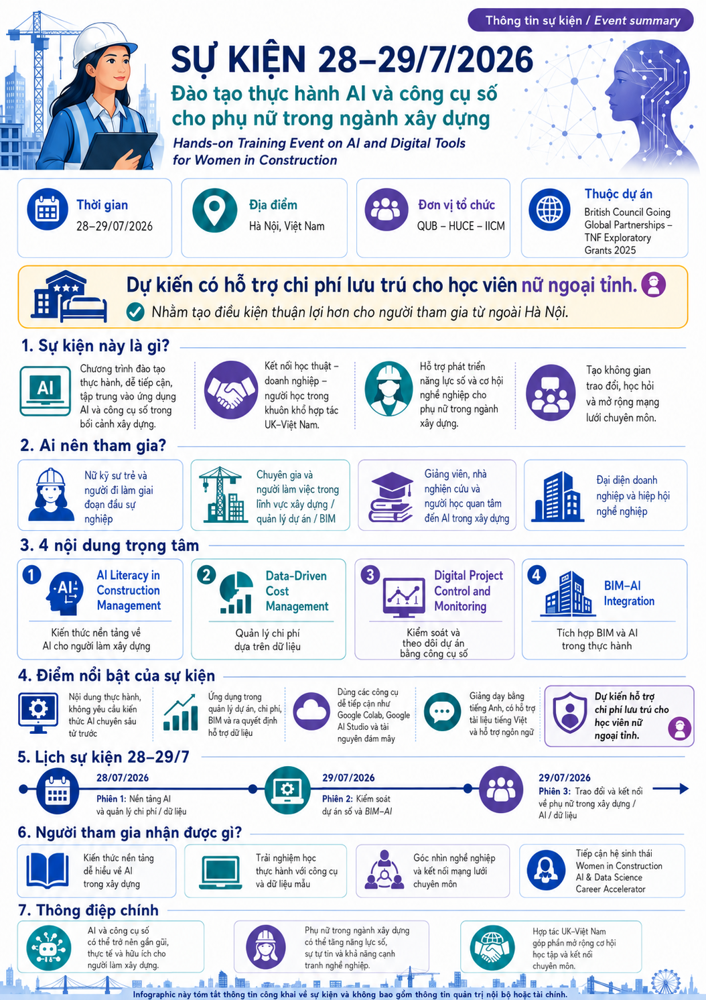

Nâng cao năng lực số
AI, khoa học dữ liệu, BIM và các công cụ số cho phụ nữ ở giai đoạn đầu sự nghiệp.
British Council Going Global Partnerships · TNE Exploratory Grants 2025
Transnational Education for Women in Construction: Leveraging AI and Digital Tools to Empower Women and Accelerate their Careers
Hợp tác UK–Việt Nam nhằm phát triển năng lực AI, khoa học dữ liệu và xây dựng số; đồng thời mở rộng cơ hội nghề nghiệp và mạng lưới hỗ trợ cho phụ nữ trong ngành xây dựng.
Mời góp ý · Co-design the programme
Phản hồi từ người học và người làm nghề là đầu vào rất quan trọng để chương trình bám đúng nhu cầu thực tế. Mời bạn chia sẻ vấn đề đang gặp, kỹ năng muốn phát triển và cách học phù hợp nhất.
Ưu tiên xem xét khi tuyển học viên: Người gửi góp ý qua biểu mẫu sẽ được ưu tiên xem xét trong quá trình tuyển học viên cho khóa tập huấn.
Tổng quan dự án
Dự án kết nối năng lực học thuật của Queen’s University Belfast với hệ sinh thái đào tạo, nghiên cứu và doanh nghiệp của Trường Đại học Xây dựng Hà Nội và IICM.
Queen’s University Belfast
Trường Đại học Xây dựng Hà Nội
Viện Quản lý Đầu tư Xây dựng
AI, khoa học dữ liệu, BIM và các công cụ số cho phụ nữ ở giai đoạn đầu sự nghiệp.
Demo ngắn, bài tập từng bước, dữ liệu mẫu và tình huống sát bối cảnh xây dựng.
Học thuật, doanh nghiệp, hiệp hội nghề nghiệp và cộng đồng người học UK–Việt Nam.
Mở rộng khả năng tiếp cận tri thức, mạng lưới, hình mẫu nghề nghiệp và cơ hội phát triển.
Đội ngũ dự án và tập huấn
Giới thiệu ngắn về các đầu mối học thuật và điều phối của dự án. Nhấn “Xem hồ sơ chính thức” để đọc thông tin đầy đủ và cập nhật.

Trưởng dự án phía QUB
Senior Lecturer · School of Natural and Built Environment · Queen’s University Belfast
Đầu mối học thuật và chủ nhiệm dự án phía Vương quốc Anh; tham gia đồng thiết kế chương trình, phát triển nội dung và giảng dạy trong các hoạt động TNE về quản lý xây dựng, BIM và đổi mới giáo dục. Bà cũng chính là giảng viên của khóa BIM train-the-trainer trong hợp tác đầu năm 2018 giữa QUB và các đối tác tại Việt Nam.
Xem hồ sơ chính thức tại QUB
Giảng viên tập huấn phía QUB
Senior Lecturer in Digital Construction · Queen’s University Belfast
Chuyên gia xây dựng số với các hướng nghiên cứu và ứng dụng gồm BIM, AI, digital twins, IoT, blockchain, quản lý dự án và tối ưu chi phí; đồng thời có kinh nghiệm tư vấn và hợp tác công nghiệp.
Xem hồ sơ chính thức tại QUBĐiều phối dự án phía Việt Nam
Giảng viên · Khoa Kinh tế và Quản lý Xây dựng · Trường Đại học Xây dựng Hà Nội
Điều phối các hoạt động tại Việt Nam, kết nối HUCE–IICM với QUB và các bên liên quan. Hướng chuyên môn gồm quản lý dự án, BIM, AI, chuyển đổi số và các khía cạnh nhân văn trong ngành xây dựng.
Xem hồ sơ chính thức tại HUCESự kiện sắp tới · Upcoming event
Hands-on Training Event on AI and Digital Tools for Women in Construction
28/07
AI literacy, dữ liệu xây dựng, quản lý chi phí và bài tập thực hành.
29/07
Theo dõi hiệu quả dự án, hỗ trợ ra quyết định và tích hợp BIM với AI.
29/07
Trao đổi về rào cản nghề nghiệp, công cụ hỗ trợ và kết nối mạng lưới.
Lịch chi tiết, địa điểm và hướng dẫn đăng ký sẽ được cập nhật trên trang này khi được xác nhận.
Nội dung chuyên môn
Thiết kế cho người học không chuyên sâu về AI, hướng đến khả năng áp dụng ngay vào công việc xây dựng và quản lý dự án.
Hiểu AI vượt ra ngoài công cụ tạo sinh; nhận diện bài toán phù hợp, giới hạn, rủi ro và cách kiểm chứng đầu ra.
Ước tính chi phí, lập ngân sách giai đoạn sớm, lựa chọn vật liệu và hỗ trợ kỹ thuật giá trị dựa trên dữ liệu.
Phân tích tiến độ, hiệu quả dự án, EVM và các chỉ báo hỗ trợ theo dõi, cảnh báo và ra quyết định.
Kết nối mô hình, dữ liệu và AI cho khởi tạo dự án, lập kế hoạch ban đầu và truy xuất thông tin.
Đồng thiết kế cùng cộng đồng
Từ hoạt động đến tác động
Rà soát và xác định cơ hội tích hợp AI, dữ liệu và xây dựng số vào đào tạo.
Phát triển khóa học ngắn, bộ học liệu và tham vấn doanh nghiệp, hiệp hội nghề nghiệp.
Thu thập trải nghiệm, rào cản, công cụ hỗ trợ và giải pháp phát triển nghề nghiệp.
Trình diễn và thực hành các mô-đun AI, dữ liệu, kiểm soát dự án số và BIM–AI.
Chia sẻ kết quả, kết nối đối tác và mở rộng hợp tác tại Queen’s University Belfast.
Định hướng đưa AI và khoa học dữ liệu vào đào tạo xây dựng.
Đề cương, slide, case study, dữ liệu mẫu và công cụ đánh giá.
Women in Construction AI & Data Science Career Accelerator Forum.
Công bố học thuật, hướng dẫn bình đẳng giới và hợp tác tiếp nối.
Đóng góp vào các Mục tiêu Phát triển Bền vững:
4 Giáo dục có chất lượng 5 Bình đẳng giới 9 Công nghiệp, đổi mới và hạ tầngTài nguyên công khai
Nhấn vào ảnh để mở bản kích thước lớn. Các tài nguyên này chỉ chứa thông tin phù hợp để chia sẻ công khai.


Thông tin cần biết
Không. Dự án ưu tiên nâng cao năng lực và cơ hội nghề nghiệp cho phụ nữ trong ngành xây dựng, nhưng nam giới và người thuộc các giới tính khác vẫn được chào đón tham gia. Tiêu chí và thành phần tuyển chọn cụ thể sẽ được nêu trong thư mời học.
Không. Chương trình bắt đầu từ kiến thức nền tảng, dùng các ví dụ từng bước và công cụ đám mây dễ tiếp cận.
Dự kiến có cấp giấy chứng nhận cho học viên tham dự trọn vẹn chương trình và đạt các yêu cầu của khóa tập huấn. Điều kiện cụ thể sẽ được thông báo trong thư mời học.
Khóa tập huấn dự kiến miễn phí. Đồng thời, dự kiến có hỗ trợ chi phí lưu trú cho học viên nữ ngoại tỉnh; điều kiện, phạm vi và quy trình xác nhận sẽ được công bố trong thư mời học và hướng dẫn tuyển học viên.
Phản hồi được sử dụng để rà soát mức độ ưu tiên của các chủ đề, điều chỉnh ví dụ và bài tập thực hành, đồng thời nhận diện các rào cản tham gia. Đây là biểu mẫu góp ý nội dung, không phải form đăng ký học; tuy nhiên, người gửi góp ý sẽ được ưu tiên xem xét khi tuyển học viên.
Địa điểm cụ thể và đường dẫn đăng ký sẽ được cập nhật trên trang này sau khi ban tổ chức xác nhận.
{kind=link}